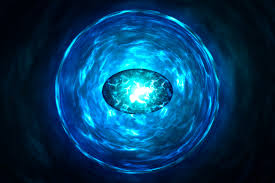

Камні нескінченності
| Ім'я |
Колір |
Сила та суперздібності |
Картинка |
| Душа |
Помаранчевий |
Можливо найнебезпечніший з усіх, цей камінь володіє розумом і відчуває голод втамувати який можуть тільки душі. Він дозволяє своєму власнику викрадати, підпорядковувати і змінювати душі живих або мертвих. Адам Уорлок був єдиним зберігачем цього каменя протягом багатьох років і відчував відповідальність за всі ті душі, які він сам забрав. Як не дивно, камінь є брамою в ідилічну кишенькову всесвіт. |
|
| Час |
Зелений |
Камінь дає своєму власнику повну владу над часом. З його допомогою стають доступними або видимими минуле, сьогодення і майбутнє. Досконало володіє каменем може використовувати його силу як зброя, заманюючи в пастку ворогів або навіть цілі світи в нескінченні петлі часу. Камінь також може змусити об'єкти і істот фізично повертатися до юного віку або старіти. |
|
| Простір |
Синій |
Камінь дозволяє своєму власникові існувати в будь-якому навколишньому просторі, будь то космос або підводні глибини; переміщати об'єкти, себе та інших істот у будь-який куточок всесвіту. |
 |
| Розум |
Жовтий |
Камінь дозволяє збільшувати силу свідомості власника і отримувати доступ до думок і снів інших істот. Підтримуваний Каменем Сили, з його допомогою можливо отримати доступ одночасно до всіх існуючих разумам. Камінь також може випускати внутрішніх демонів, ким би вони не були в інших всесвітів, і заганяти їх назад. |
|
| Реальність |
Червоний |
Камінь дозволяє своєму власникові здійснювати будь-які бажання, навіть якщо ці бажання суперечать науковим законам. Якщо необережно його використовувати, камінь може призвести до лиха. Торкаючись кордон реальності, він викликає катастрофічні пошкодження, які можуть бути ізольовані тільки силою Каменю Простору, Каменю Душі і Каменю Сили. |
 |
| Сила |
Фіолетовий |
Камінь має доступ до всієї сили і енергії, коли-небудь існувала, або існує у майбутньому, живить інші камені і підсилює їх ефекти. Камінь дозволяє власнику дублювати практично будь-яку фізичну надлюдську здатність і стає невразливим, а тому і непереможним, використовуючи лише одну суцільну силу. |
|